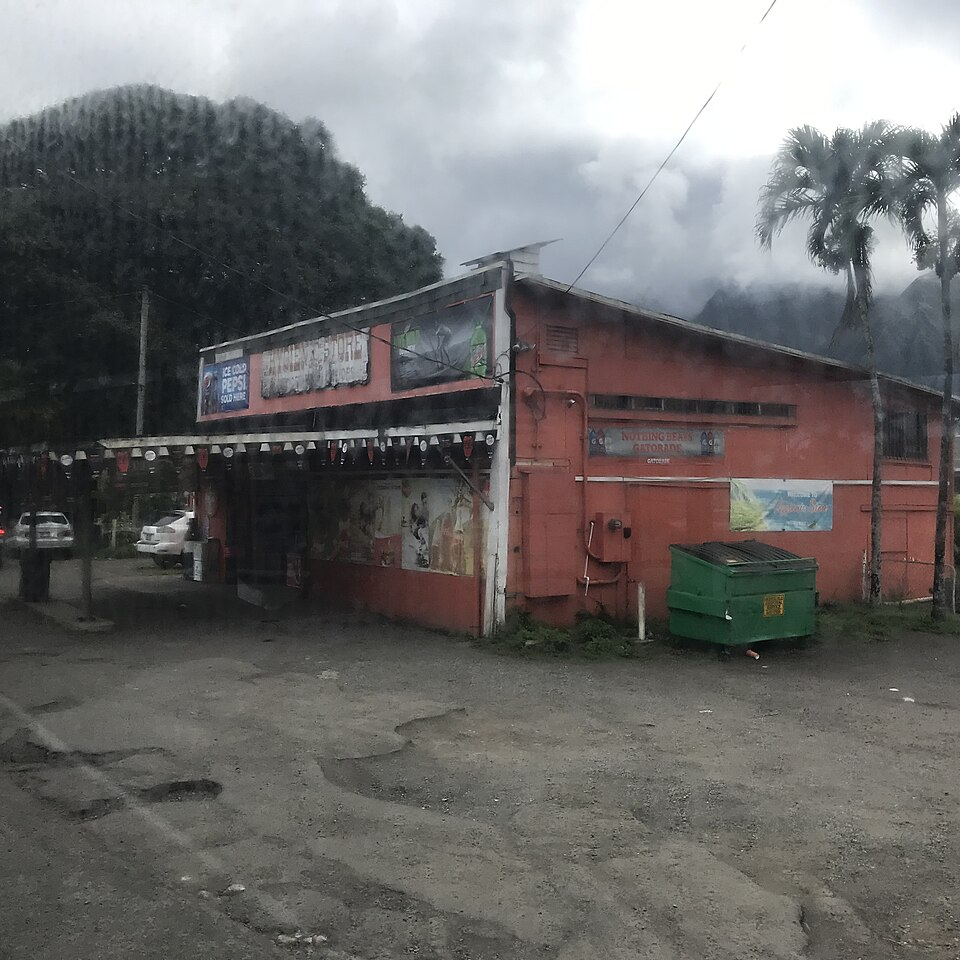

Hygienic Store
Place: Hygienic Store, ʻĀhuimanu, Windward Oʻahu
Type: Historic general store / neighborhood landmark
Namesake: Hygienic Dairy, a major Windward Oʻahu dairy operation that grew from the Ahuimanu Stock Farm established in 1924
Story it tells: How a small neighborhood store preserves the name of a dairy and surrounding cattle pastures of ʻĀhuimanu that were later developed into Temple Valley, subdivisions, and modern suburban development.

Hygienic Store is a landmark in Kahaluʻu at the entrance to ʻĀhuimanu Valley. Today it operates as a neighborhood convenience store, but its unusual name is a surviving piece of a very different Windward Oʻahu. Many decades ago hundreds of dairy cows grazed across the surrounding valley.
In 1924, Mr. Young established the Ahuimanu Stock Farm. The operation began with about 90 milking cows and moved closer to the present store location in 1927 (from a little deeper in the valley). In 1931, the business adopted the name that would outlive the dairy itself: Hygienic Dairy.
The word “Hygienic” sounds peculiar but it made considerably more sense as the name of a dairy during the early twentieth century. Before modern refrigeration, pasteurization, and sanitary controls became widespread, contaminated milk was a serious public health problem. Dairy companies emphasized cleanliness to reassure customers that their products were safe. Calling the operation Hygienic Dairy advertised exactly what families wanted to hear about the milk they were buying.
The dairy grew with its herd reaching as many as 450 cows, while grazing lands used by the operation extended across thousands of acres of ʻĀhuimanu Valley. At its height, Hygienic was reportedly among the largest dairy operations in Hawaiʻi.
The small store along the road served the dairy and surrounding rural community. Residents could purchase fresh meat, produce, hardware, rubber boots, groceries, and other necessities without traveling into Kāneʻohe. The store also sold gasoline and became an informal gathering place for families scattered throughout ʻĀhuimanu and the surrounding countryside. For some residents, even the mail came through the store.
By 1950, however, Hawaiʻi's dairy industry was changing. Hygienic Dairy and Campos Dairy in Kailua broke with the Hawaii Dairymen's Association (which would eventually become Meadow Gold) during a dispute over milk prices. The two Windward dairies attempted to market and process their milk independently, challenging the cooperative that dominated much of the local milk industry.
That independence did not last long. Foremost Dairies entered the Hawaiʻi market and acquired Hygienic and Campos in 1952. Hygienic's cattle and dairy operations were consolidated to Waimānalo.
The storefront had a different trajectory. In 1950, Simon Chong took over the small company store, separating it from the dairy operation whose name remained painted across the storefront. As the cows disappeared, the Hygienic Store continued serving the neighborhood.
During the 1960s and 1970s, former grazing lands throughout ʻĀhuimanu were developed into residential neighborhoods and what became known as Temple Valley.
Other portions of the former rural landscape took different forms. The Valley of the Temples Memorial Park opened in 1963 on the slopes farther into the valley, followed by the Byodo-In Temple in 1968. Commercial development spread through the lower valley, including the Temple Valley Shopping Center, while new roads and subdivisions tied ʻĀhuimanu more closely with Kāneʻohe and the rest of Windward Oʻahu.
What had once been a full-service rural general store and gas station gradually became the convenience store familiar to generations of modern residents.
Today, Hygienic Store is an easy landmark to pass without realizing what its name represents. The small roadside building is one of the few obvious reminders that ʻĀhuimanu Valley was once dairy country. Nearly a century after Hygienic Dairy adopted its memorable name, the store continues to preserve it amid the neighborhoods that replaced the pastures.